library(tidyverse) # data wrangling, visualisation, etc
library(scales) # formatting of scales
library(ggstats) # additional visualisation functions3 Describing Categorical data
3.1 Introduction
In this first unit we will get to grips with the basics of describing categorical data using RStudio. To follow this guide you should have first watched the video lectures on the VLE where each of the techniques here used are discussed in detail. Also on the VLE, you will find RStudio video tutorials that elaborate on this workshop guide.
The dataset we will analyse the 2012 UK Omnibus Poverty and Social Exclusion Survey: Necessities of Life which is an
‘attitudinal survey aimed to identify what the population as a whole think are ’necessities’: things that everyone should be able to afford and which no one should have to go without. Data were collected in Northern Ireland Statistics and Research Agency (NISRA), and in Great Britain (Scotland, England and Wales) by NatCen Social Research’.
You can find and download the dataset and relevant documentation in the UK Data Service. If interested in finding out more about the substantive findings of the project, you can read the relevant report.
The substantive questions that motivate this unit analysis are :
- to what extent do UK residents regard a range of goods and services as “necessary” or “merely desirable”?
- to what extent do perceptions of necessities vary across relevant socio-demographic groups?
In pursuing answers to these questions, you will learn more about the practical aspects of the using the following analytical techniques:
- Numerical Summaries
- Univariate frequency tables
- Bivariate contingency tables
- Visualisation
- Univariate bar plots
- Bivariate clustered and Stacked bar plots
You may have noticed that these are the very same techniques you learnt about in the quantitative semester of Research Methods module in Year 2, so none of this material should be new to you. Having said this, we will be able to explore some aspects in a bit more detail to strengthen both your intuitive and statistical understanding of what the techniques are doing.
3.2 Data and libraries
Assuming that you are already initialised RStudio in your computer and you have opened a project located in a folder containing the dataset file, the first step is call a number of packages or libraries that provide additional functions needed to run the code for this workshop:
We then proceed to load the PSE data file, called omni.Rdata, into the computer’s memory so we can work with it. In this case we are using a data file in a format that is native to R:
A native file format is the default way in which a particular software encodes and stores information into a file. These are the file types that a program can save and open without further processing or converting. File formats can be recognised by their extension - e.g. the
.docxin Word or the*.Rdataand*.Rda, but R can also import data files that have been generated by other software such as Stata (.dta) or SPSS (*.dta) using packages likehaven.
To open this file in R we will use the function load() which works for such native file format:
load("pse_omni.Rdata")We can now get started with the analysis, but before we do this, though, it is worth noting that in going through the unit and running the code you risk
As a general rule, before you start running code take some time to:
- think carefully about what it is that you are attempting to do,
- spell out the steps that are required
- develop a mental, physical or virtual image of the outcome that you expect to see at the end of the process.
REMEMBER: only if we have clear sense of what we are after, should we then ask the computer to do the counting for us. Only then can we be in a position to tell whether what the computer has done for us is what we (thought we) wanted.
3.3 Univariate categorical data
Remember that to our objective in this unit is to learn to describe the distribution of categorical data.
Definition: The distribution of a variable is a description of all the values that a variable can take and how often each value occurs in your data.
We can convey this same information in two main ways - numerically and graphically - and the following subsections shows you how to do this in R
3.3.1 Numerical description of univariate categorical data:
Before you ask R to do anything for you, let’s spell out first what is it we need done:
Select a categorical variable and figure out how many categories it has;
Count how many observations in your data are classified into each one of those categories;
Represent these counts (or a derived quantity) as numbers in a table where values for each category are clearly distinguishable
We now apply these steps to our survey data on subjective perception of needs that asks respondents whether or not they think a TV is necessary:
- In the codebook we learn that categorical variable
tvhas two possible responses: either having a TV is Necessary or is instead simply Desirable. - We then count how many respondents answered Necessary and how many answered Desirable. These will be the raw counts which can be transformed into proportions or percentages.
- We can then create a table that represents and labels these quantities such that it is obvious which quantity corresponds to each category.
The resulting table should look similar to this:
| Necessary | Desirable |
|---|---|
| \[ P(TV = Necessary) \] | \[ P(TV = Desirable) \] |
3.3.1.1 Base R
Now that we are clear on what we want, we proceed to create our first frequency table using the function table() and specifying the name of the variable to be described. As R allows you to work with multiple datasets simultaneously, you need to specify both the name of the dataset and the name of the variable separated by $ , i.e. data$variable. In our case this is:
table(omni$tv)
Necessary Desirable
1013 892 The table shows that 1013 respondents say that having a TV is a necessity whereas 892 answer that it is simply desirable.
We can calculate other quantities based on these raw counts and to do so more easily, all we need to do is to store the table as an object in the computer memory. This is achieved by using a left-facing arrow <- known as the assignment operator:
tabtv <- table(omni$tv) #| 1
tabtv #| 2
Necessary Desirable
1013 892 - Assign the frequency table
table(omni$tv)to an object calledtabtv - Print the
tabtvobject
Once saved, we can do all sorts of things with that object. For instance, we can add table margins - i.e. the sum of all observations contained in your table - to the tabtv table using the function addmargins():
addmargins(tabtv)
Necessary Desirable Sum
1013 892 1905 We can also express the numbers in the table as proportions or percentages using the function prop.table():
# as proportion
prop.table(tabtv)
Necessary Desirable
0.5317585 0.4682415 #as percentage
prop.table(tabtv)*100
Necessary Desirable
53.17585 46.82415 3.3.1.2 Tidyverse and the pipe operator
You can produce the same results using tidyverse functions. The tidyverse is a family of packages that have consistent coding style and data handling conventions. For a detailed treatment of the tidyverse see the book R for Data Science (2nd Edition) by Wickham et al. (2023).
A key element of the tidyverse is the use of the pipe operator |> (hotkey: command/ctrl + shift + m) which allow us to write sequences or chains of functions. It’s a bit like a baking recipe shown in figure 1 where an object (the cake ingredients) are processed or transformed by function or verb (techniques like mixing, baking or decorating) in a particular order:
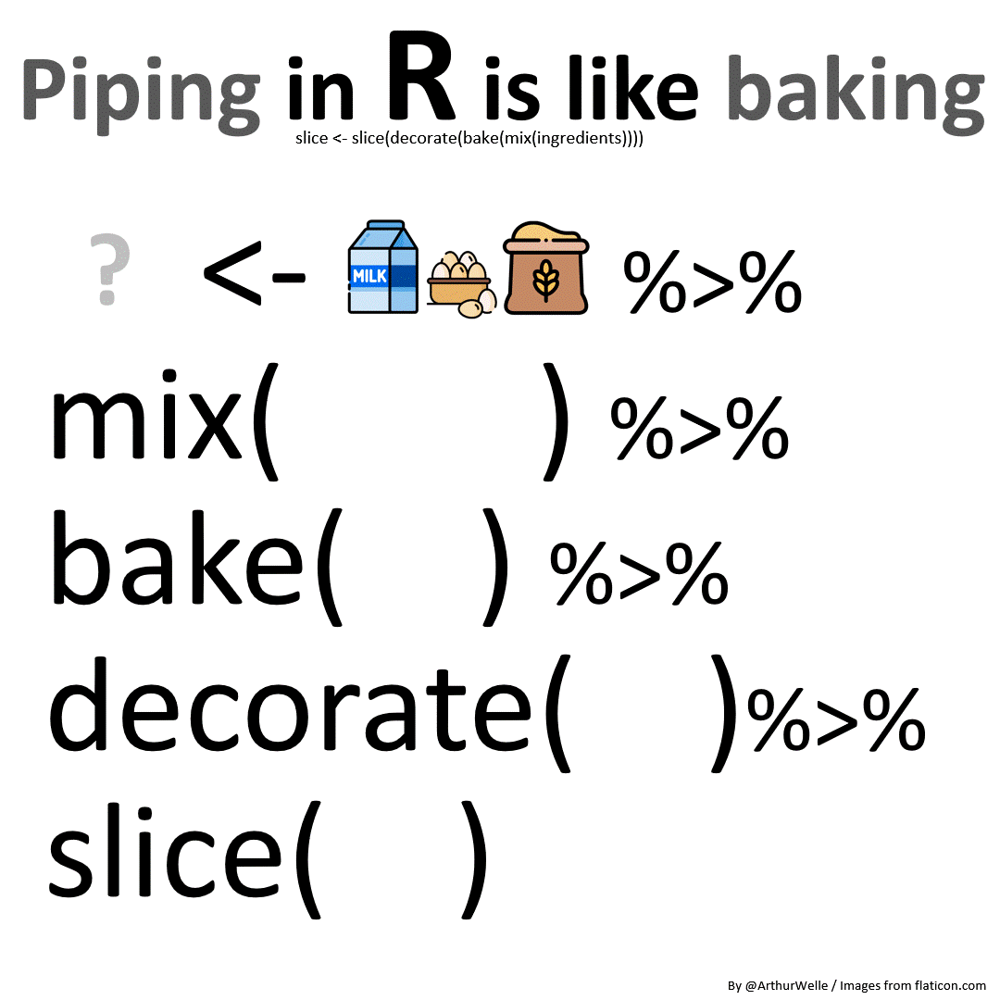
Here’s an example of how we create a frequency table in R using tidyverse functions or verbs and the pipe operator. As shown below, each line in the sequence can be read in natural language where the pipe operator |> can be taken to mean “and then”:
- 1
-
Take the data
omni, and then… - 2
- group respondents by their response categories, and then…
- 3
- count the number of respondents grouped in each category, and then…
- 4
- divide the number of respondents in each category by the total number (or sum) of respondents and multiply it all by 100 to get the percentages.
# A tibble: 3 × 3
tv n perc
<fct> <int> <dbl>
1 Necessary 1013 51.8
2 Desirable 892 45.6
3 <NA> 52 2.66You will note though that this table shows three counts instead of two. This is because tidyverse functions by default display not just the counts for the valid values but also for the missing values or NAs, whereas table() by default omits them unless you specify otherwise:
table(omni$tv, useNA = "ifany")
Necessary Desirable <NA>
1013 892 52 Back to the tidyverse table, to get rid of those NAs we use drop_na() as part of the sequence:
omni |>
drop_na(tv) |>
group_by(tv) |>
summarise(n = n()) |>
mutate(perc = n / sum(n) * 100)# A tibble: 2 × 3
tv n perc
<fct> <int> <dbl>
1 Necessary 1013 53.2
2 Desirable 892 46.8This can also be achieved using the function count() instead of n()without the need for grouping the responses first with group_by().
omni |> # dataset
drop_na(tv) |> # drop missing values from variable tv
count(tv) |> # count the respondents in each category
mutate(perc = n / sum(n) * 100) tv n perc
1 Necessary 1013 53.17585
2 Desirable 892 46.82415Note however that the code will return a table that has the exact same values but is printed with different formatting conventions (check out the number of decimals) as a result of being objects of different classes (a dataframe instead of a tibble). To round percentages up to 2 digits you can use the round() function
omni |> # dataset
drop_na(tv) |> # drop missing values from variable tv
count(tv) |> # count the respondents in each category
mutate(perc = round(n / sum(n) * 100, 2)) # calculate percentage tv n perc
1 Necessary 1013 53.18
2 Desirable 892 46.82Or you can use the function percent() from the package scales which will also add the % sign
omni |> # dataset
drop_na(tv) |> # drop missing values from variable tv
count(tv) |> # count the respondents in each category
mutate(perc = percent(n / sum(n), 0.01)) # calculate percentage tv n perc
1 Necessary 1013 53.18%
2 Desirable 892 46.82%3.3.2 Graphical representation of univariate categorical data:
There are different ways in which we can generate plots of all sorts in R, using both base R as well as other packages. In this module we will primarily use the package ggplot2, part of the tidyverse family.
This package is particularly useful because it allows us to produce different types of plots using a consistent and systematic coding style and because it is underpinned by an intuitive way of thinking about data visualisation, known as a ‘layered grammar of graphics’ (Wickham 2010). A ggplot object is composed of multiple components that are layered on top of each other to produce the final data visualisation that we use in our reports. Let’s see how this works for producing a bar chart:
We begin with the function ggplot() which tells R we want to create ggplot object and then specify the data we are working with:
ggplot(data = omni)This produces a blank canvas of sorts on which we will layer the visual components. In the aesthetics aes() we will specify which axis we want the category bars of tv to be plotted along. In this case we will ask for them to be plotted in the x or horizontal axis:
ggplot(data = omni, aes(x = tv))Note that the bars do not appear yet, but the category labels do. To include the bars representing the counts we need to specify a geometric shape, in this case geom_bar():
ggplot(data = omni, aes(x = tv)) +
geom_bar(stat = "count")You can see how the plot evolves as a result of layering the different components:

Now, we have our first recognisable bar chart, it is worth stopping to check that the plot R produced looks roughly similar to what we were hoping to obtain. Here we find that ggplot2 has decided to include by default a third bar for the missing values (called NA).
This NA bar includes important information about our variable - namely, how many invalid responses the survey collected - but it poses two problems:
- it detracts our attention from the Necessary and Desirable bars which are the quantities that are of substantive interest to us;
- it could potentially distort the plot as a whole if the volume of missingness was large.
To remove or drop the missing values we have a number of options all of which involve subsetting the data we input into the graph by using the [] sign and a subsetting condition that basically keeps valid values in and leaves missing values out. Note that the subsetting condition must be included before the comma to indicate that we are selecting rows and not columns.
The first and clunkier option is to tell R to only keep those respondents in the data that do NOT have missing values for a given variable using the expression !is.na() which basically translates as ‘it is not a missing value’:
ggplot(omni[!is.na(omni$tv), ], aes(x=tv)) +
geom_bar(stat="count")
Alternatively we can use the function complete.cases() which is a bit more readable and produces the same result by including only those respondents with valid responses in the named variables:
# Eliminate missing value category from the chart with (omni[complete.cases(omni$tv), ]
ggplot(omni[complete.cases(omni$tv), ], aes(x=tv)) +
geom_bar(stat="count")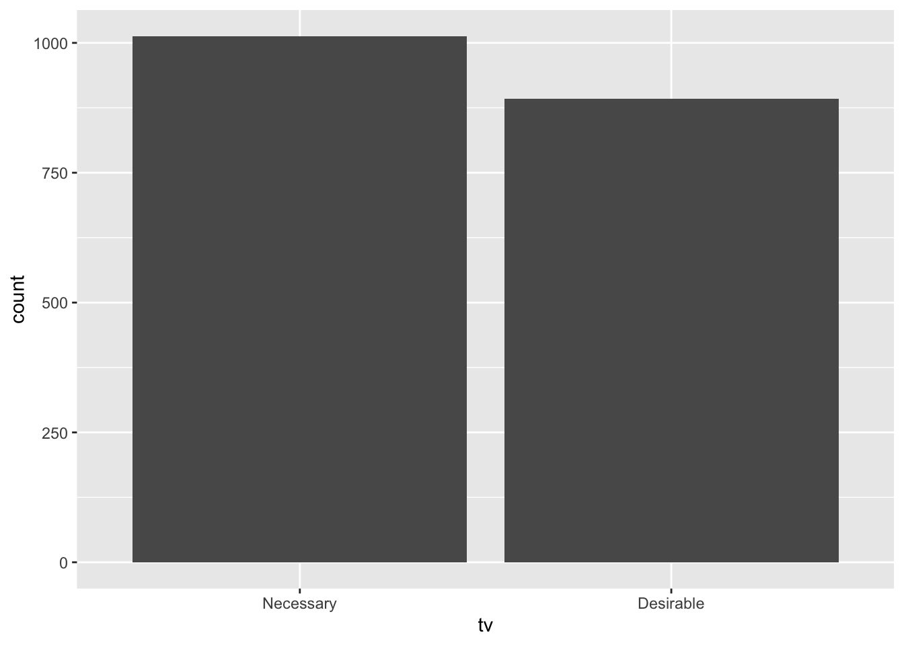
Finally, using the pipe |> you could write the code as a sequence contains the function drop_na() to get rid of the missing values. Since for many applications this is probably the most straightforward solution we will stick with this style from now on:
omni |>
drop_na(tv) |>
ggplot(aes(x = tv)) +
geom_bar(stat="count")
Often you may want to plot proportions rather than counts, which can be achieved by specifying in the aesthetics how the values in the y-axis are calculated with y = after_stat(prop), group = 1:
omni |>
drop_na(tv) |>
ggplot(aes(x = tv, y = after_stat(prop), group = 1)) +
geom_bar(stat="count") 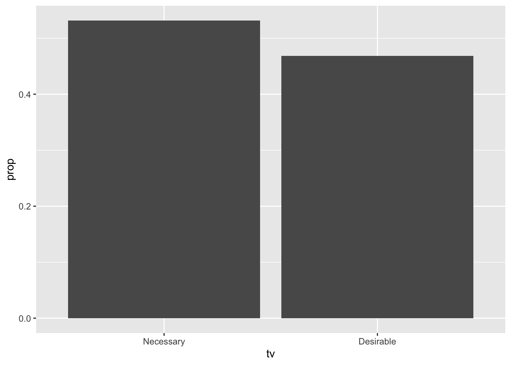
Since percentages are basically proportions multiplied by 100, we simply change the labels the vertical axis ticks using the option + scale_y_continuous(labels = scales::percent)
omni |>
drop_na(tv) |>
ggplot(aes(x = tv, y = after_stat(prop), group = 1)) +
geom_bar(stat="count") +
scale_y_continuous(labels = scales::percent)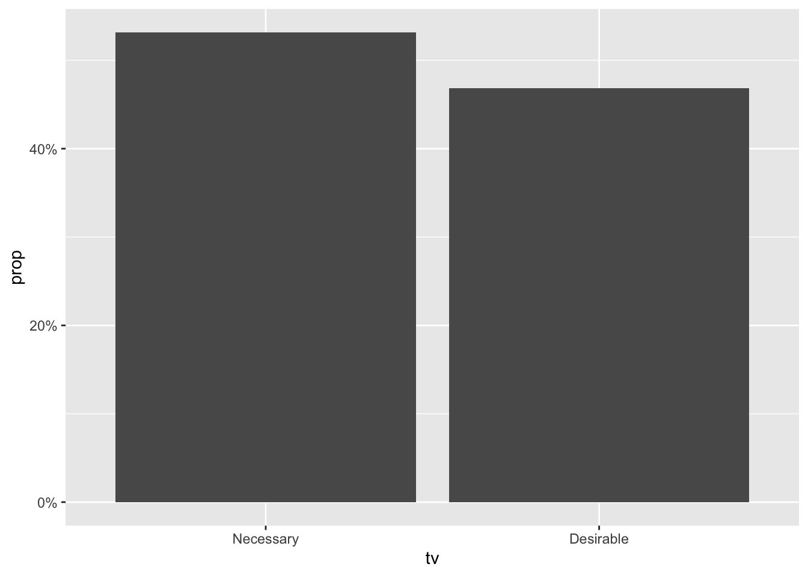
Finally, we can change the labels in the plot and add a title to make it more informative with labs() though you could also achieve the same result by using ggtitle(), xlab() and ylab():
omni |>
drop_na(tv) |>
ggplot() +
geom_bar(aes( x = tv, y = after_stat(prop), group = 1)) +
labs(x = "Is a TV set necessary?", # specify x-axis lab
y = "Percentage of respondents", # specify y-axis lab
caption = "Source: Poverty and Social Exclusion Survey 2012",
title = "A majority of respondents think a TV is necessary") # main title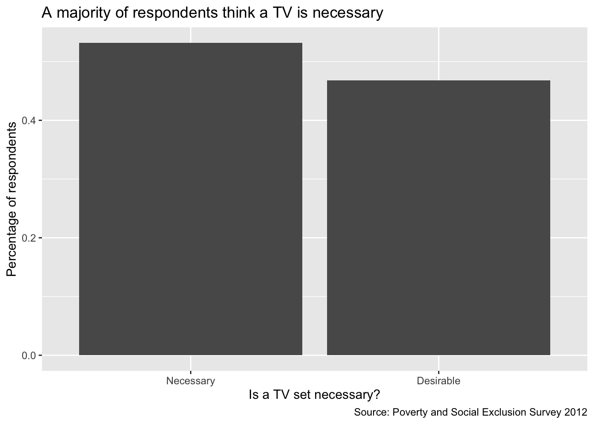
3.3.3 Exercise I
Now it’s your turn to practice. Provide the code necessary to calculate and plot the univariate distribution (as counts and percentages) of respondents according to whether they think having a “a damp-free house” (variable nodamp) is necessary as opposed to just desirable. You should obtain the following results:
Necessary Desirable
94.47 5.53 nodamp n percent
1 Necessary 1811 94.470527
2 Desirable 106 5.529473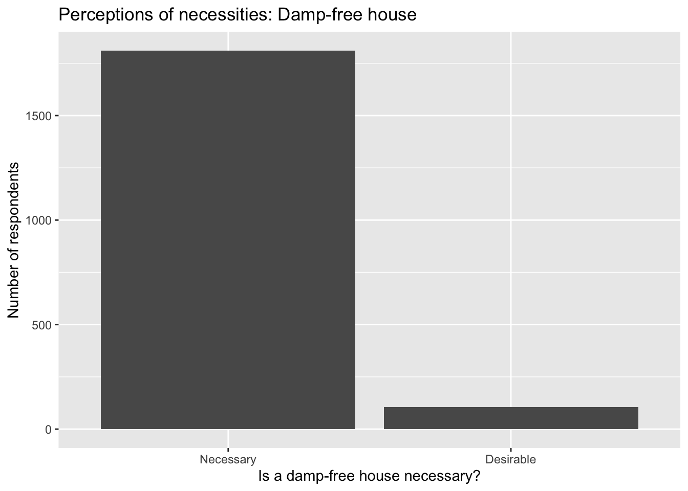
3.4 Working with bivariate categorical data
3.4.1 Numerical description of bivariate categorical data:
After learning how to produce a frequency table, we move onto contingency tables or crosstabulations. Contingency tables help us represent the cross-classification of two or more categorical variables - i.e. how individuals are classified simultaneously in the categories of more than one variable. For instance, we may want to find out whether one’s perception of TV as a necessity or a mere desire depends on the individual’s employment status.
3.4.1.1 Base R
We use again the function table() but this time we specify 2 variables as table(var1, var2) such that the categories for first variable would be represented as rows, and those of the second variable on the columns:
table(omni$paidwork, omni$tv)
Necessary Desirable
Yes 438 516
No 571 365As with frequency tables, we can also obtain the marginal counts for each category on the rows and columns, as well as the total:
tvpw<-table(omni$paidwork, omni$tv) # create table object
addmargins(tvpw)
Necessary Desirable Sum
Yes 438 516 954
No 571 365 936
Sum 1009 881 1890It may be difficult to make sense of the raw counts, so it is often desirable to include either row or column proportions or percentages. This is easily done using prop.table() with the option 1 for rows and 2 for colums:
# row percentages
prop.table(tvpw, 1)*100
Necessary Desirable
Yes 45.91195 54.08805
No 61.00427 38.99573#column percentages
prop.table(tvpw, 2)*100
Necessary Desirable
Yes 43.40932 58.56981
No 56.59068 41.430193.4.1.2 Tidyverse
We can achieve the same using tidyverse code, though it is decidedly more involved. This is because tidyverse, by default, presents data in long form. To see this run the following code which only varies from the one for frequency tables in that it specifies two variables rather than one - note that the order in which you introduce the variable names in the group_by() has consequences on how the data will appear:
omni |>
drop_na(paidwork, tv) |> # remove missing values on two vars
group_by(paidwork, tv) |> #arrange by the categories of two vars
summarise(n = n()) # count respondents in each combination# A tibble: 4 × 3
# Groups: paidwork [2]
paidwork tv n
<fct> <fct> <int>
1 Yes Necessary 438
2 Yes Desirable 516
3 No Necessary 571
4 No Desirable 365As you can see the raw counts for each combination of tv and paidwork are exactly the same as we got before using the table() function but they are presented in a very different way. Instead of a table with two rows and two columns - a.k.a. a 2 x 2 table - that represent each of the 2 variables’ response categories, we instead get a 4 x 3 table where both the response categories for two variables AND the corresponding raw counts for each combination are shown as values in three separate columns. This is what we call a long format dataset.
Although it provides exactly the same information as the standard contingency table, this particular formatting is perhaps less commonly used and less suitable to the kinds of analyses we conduct in the social sciences. Thus, in order to re-arrange this to a wide format we will use the pivot_wider() function to get the more familiar layout:
omni |>
drop_na(paidwork, tv) |> # remove missing values on two vars
group_by(paidwork, tv) |> #arrange by the categories of two vars
summarise(n = n()) |> # count respondents in each combination
pivot_wider(names_from = tv,
values_from = n) # this re-organises the table to appear as wide format# A tibble: 2 × 3
# Groups: paidwork [2]
paidwork Necessary Desirable
<fct> <int> <int>
1 Yes 438 516
2 No 571 365Now, if yould like like row percentages you would use:
omni |>
drop_na(paidwork, tv) |>
group_by(paidwork, tv) |>
summarise(n = n()) |>
mutate(perc=n/sum(n)*100) |>
select(-n) |>
pivot_wider(names_from = tv,
values_from = perc)# A tibble: 2 × 3
# Groups: paidwork [2]
paidwork Necessary Desirable
<fct> <dbl> <dbl>
1 Yes 45.9 54.1
2 No 61.0 39.0For column percentages you could use:
omni |>
drop_na(paidwork, tv) |>
group_by(tv, paidwork) |>
summarise(n = n()) |>
mutate(perc = n / sum(n) * 100) |>
select(-n) |>
pivot_wider(names_from = tv,
values_from = perc)# A tibble: 2 × 3
paidwork Necessary Desirable
<fct> <dbl> <dbl>
1 Yes 43.4 58.6
2 No 56.6 41.43.4.2 Graphical representation of bivariate categorical data:
Contingency tables can also be represented graphically using bar plots, but the bars have to be plotted for each of the categories of the independent variable separately. This means we need to think carefully about what is the substantive nature of the relationship between both variables. Thus we may want to know:
- How the distribution of perception of necessities varies between different economic positions.
- The socioeconomic composition of those who think TVs are necessary compared to those that think TVs are only desirable goods.
The first seems to be a more plausible relation. It makes sense that we should care whether people with greater attachment to the labour market are more or less likely to consider TVs a necessity compared to those without.
The first bar plot we will create is a stacked bar chart.
#stacked bar chart
omni |>
drop_na(tv, paidwork) |>
ggplot(aes(x = paidwork)) +
geom_bar(stat = "count", aes(fill = tv)) 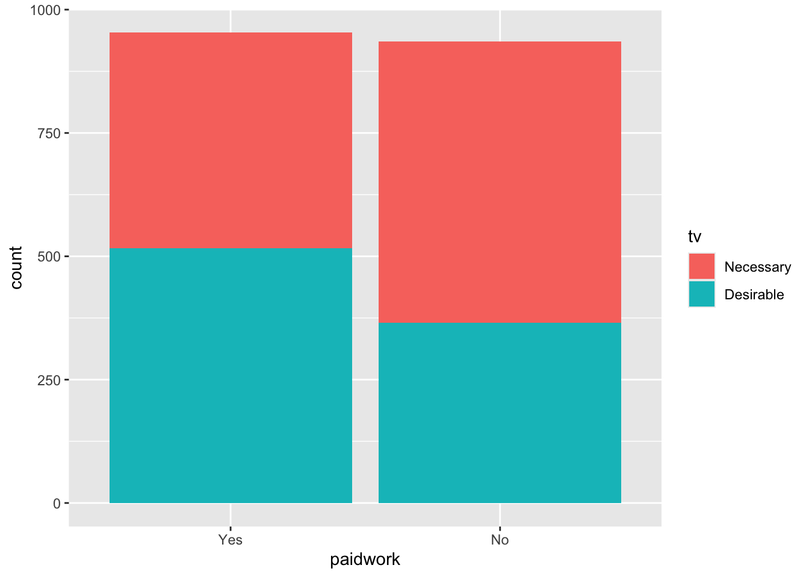
If we are interested in comparing the proportions within each group, particularly if there are large differences in raw counts, we can also stack them to add to 100%:
#stacked bar chart up to 100%
omni |>
drop_na(tv, paidwork) |>
ggplot(aes(x = paidwork)) +
geom_bar(stat = "count", aes(fill = tv), position = "fill") +
scale_y_continuous(labels = scales::percent)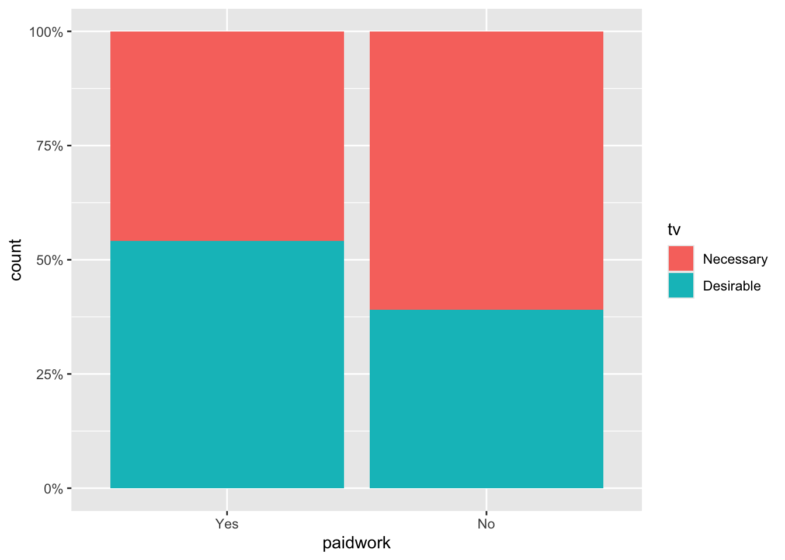
We can also build a clustered bar chart which we can create in two different ways. The first is the classic clustered bar chart using the option position="dodge" (position="dodge2" will leave a space between the bars)
# clustered bar chart
omni |>
drop_na(tv, paidwork) |>
ggplot( aes(x = paidwork)) +
geom_bar(stat = "count", aes(fill = tv),
position = "dodge") 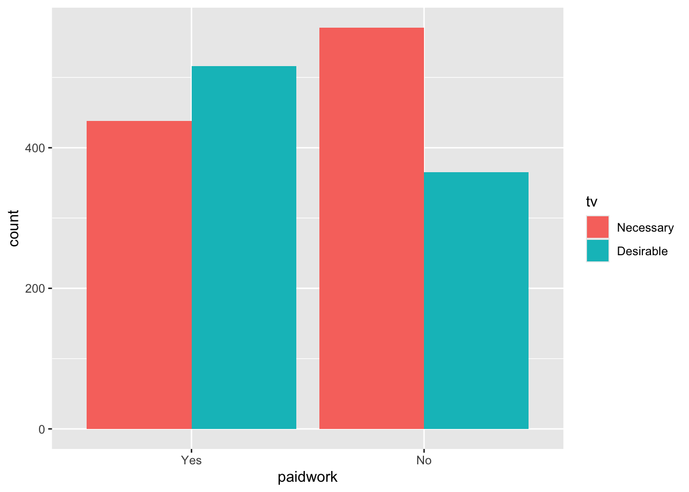
To add percentages to a clustered bar chart is a bit cumbersome but here is a possible solution which basically involves calculating directly the proportions before plotting them. It requires an additional package called ggstats for geom_bar() to recognise proportions as the quantity to plot
omni |>
drop_na(tv, paidwork) |>
group_by (paidwork, tv) |>
count() |>
ggplot(aes(x=paidwork, fill = tv, weight = n,
by = tv, y = after_stat(prop))) +
geom_bar(stat="prop",
position="dodge") +
scale_y_continuous(labels = scales::percent)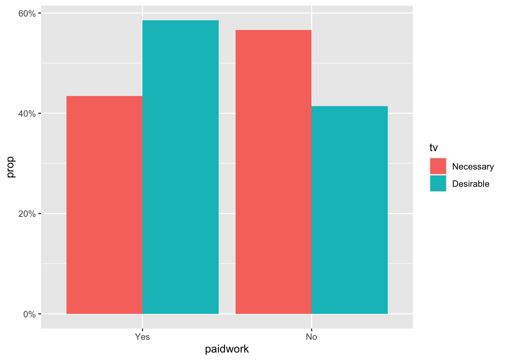
And we can obviously add labels and titles using the same functions as before.
omni |>
drop_na(tv, paidwork) |>
group_by (paidwork, tv) |>
count() |>
ggplot(aes(x=paidwork, fill = tv, weight = n,
by = tv, y = after_stat(prop))) +
geom_bar(stat="prop",
position="dodge") +
scale_y_continuous(labels = scales::percent) +
labs(x = "Are you in Paid Work?", # specify x-axis lab
y = "Percentage of respondents", # specify y-axis lab
caption = "Poverty and Social Exclusion Survey 2012",
title = "Paid work and perception of necessities: TV sets") # main title
Finally, an alternative is rather than clustering within the same graph, an alternative is to use faceting:
# "faceted" clustered bar chart
omni |>
drop_na(tv, paidwork) |>
ggplot(aes(x = tv)) +
geom_bar(stat = "count") +
facet_wrap(~paidwork)
3.4.3 Exercise II
Write the code to produce the contingency table and clustered and stacked bar charts below. Describe the bivariate distribution of item “appropriate clothes for a job interview” (variable jobfrock) across the educational categories of variable graduate.
Necessary Desirable
Graduates 71.39 28.61
Not Graduates 64.46 35.54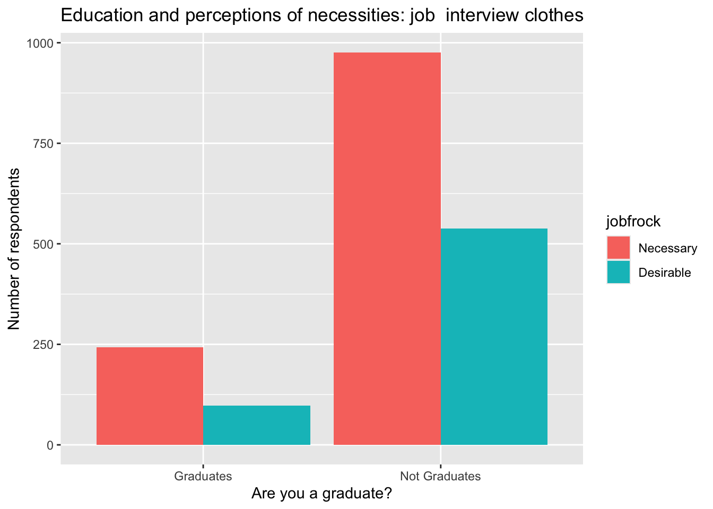
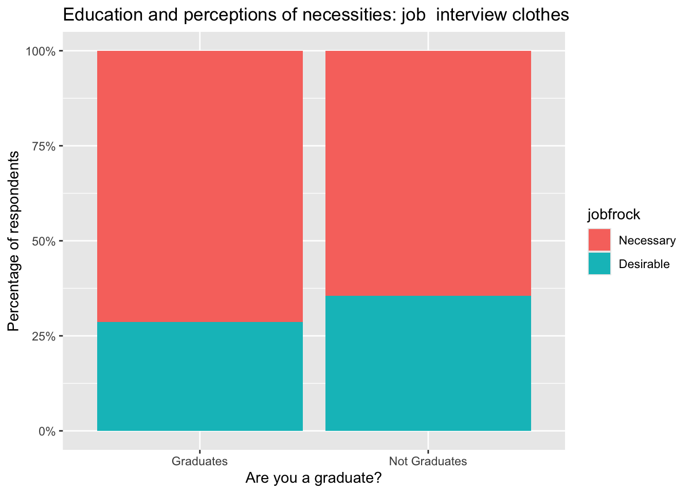
3.5 Key take home points
- The distribution of a variable is a description of all the values that it can take and how often each value occurs in your data.
- The quantities we use to describe categorical distributions are raw frequency counts and proportions or percentages. These quantitaties can be represented numerically and graphically and provide virtually the same information, even though they may be more appropriate depending on the intended purpose and target audience.
- Univariate categorical data can be described using frequency tables and simple bar charts (amongst others) and bivariate categorical data are best described using contingency tables and stacked or clustered bar charts (among others).
- The specification of tables and plots for univariate categorical data is fairly straightforward, but that for bivariate categorical data is much trickier because choices must reflect core questions about the underlying research design, including some idea of what is the postulated causal direction.
- R code comes in a number of different flavours or styles: base R and tidyverse. Each has strengths and weaknesses and may involve considerably different ways of approaching the analysis of your data. Use one, the other or both depending on what feels easier or more intuitive to you in the moment.